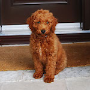
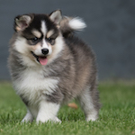

An mini austrailian shepard on average costs $800. But it can cost upwards of $2300 to $10,000.
A miniature dorkie is a mixed breed of a Dachshund and a Yorkshire Terrier. The average cost is between $800-$1000.
A miniature Goldendoodle is probably my favorite mix right now, and would probably be what I'd want. It's a mix between a Golden Retriever and Poodle. Unfortunately they cost between $1500-$3500.
A Cavalier King Charles Spaniel is a pure breed, and are naturally small animals. Since they are a pure breed, they also are not cheap, running from $1800 to $3500.
A Pomsky is a mix between a Pomeranian and a Husky. While you can't buy a "miniature", they vary in sizes, and some can be small. They range fromm $1000 to $5000, depending on size and eye color.